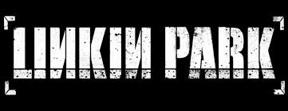
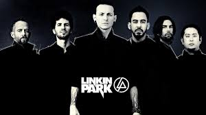

Linkin Park was founded by three high school friends: Mike Shinoda, Rob Bourdon, and Brad Delson.[21][22] The three attended Agoura High School in Agoura Hills, California, a suburb of Los Angeles.[21][22] After graduating from high school, the three began to take their musical interests more seriously, recruiting Joe Hahn, Dave "Phoenix" Farrell, and Mark Wakefield to perform in their band, then called Xero. Though limited in resources, the band began recording and producing songs within Shinoda's makeshift bedroom studio in 1996, resulting in a four-track demo tape, entitled Xero.[21][23] Tensions and frustration within the band grew however after they failed to land a record deal.[21] The lack of success and stalemate in progress prompted Wakefield, at that time the band's vocalist, to leave the band in search of other projects.[21][23] Farrell also left to tour with Tasty Snax, a Christian punk and ska band.[24][25]
After spending a considerable time searching for Wakefield's replacement, Xero recruited Arizona vocalist Chester Bennington, who was recommended by Jeff Blue, the vice president of Zomba Music in March 1999.[26][27] Bennington, formerly of a post-grunge band by the name of Grey Daze, became a standout among applicants because of the dynamic in his singing style.[21] The band then agreed on changing its name from Xero to Hybrid Theory; the newborn vocal chemistry between Shinoda and Bennington helped revive the band, inciting them to work on new material.[21] In 1999 the band released a self-titled extended play, which they circulated across internet chat-rooms and forums with the help of an online 'street team'.[28][29] The band's renaissance culminated with another change in name, this time to Linkin Park, a play on and homage to Santa Monica's Lincoln Park[21] (now called Christine Emerson Reed Park[30]). The band initially wanted to use the name "Lincoln Park", however they changed it to "Linkin" to acquire the internet domain "linkinpark.com".[31] The band still struggled to sign a record deal. Linkin Park turned to Jeff Blue for additional help after facing numerous rejections from several major record labels. After failing to catch Warner Bros. Records on three previous reviews, Jeff Blue, who had negotiated his employment contract with Warner Brothers to include signing Linkin Park, and was now the vice president of Warner Bros. Records, helped the band sign a deal with the company in 1999. Farrell returned the following year and the band released its breakthrough album, Hybrid Theory.[26]
Linkin Park released Hybrid Theory on October 24, 2000.[32][33] The album, which represented half a decade's worth of the band's work, was edited by Don Gilmore.[21] Hybrid Theory was a massive commercial success; it sold more than 4.8 million copies during its debut year, earning it the status of best-selling album of 2001, while singles such as "Crawling" and "One Step Closer" established themselves as staples among alternative rock radio play lists during the year.[24] Additionally, other singles from the album were featured in films such as Dracula 2000, Little Nicky, and Valentine.[24] Hybrid Theory won a Grammy Award for Best Hard Rock Performance for the song "Crawling" and was nominated for two other Grammy Awards: Best New Artist and Best Rock Album.[34] MTV awarded the band their Best Rock Video and Best Direction awards for "In the End".[21] Through the winning of the Grammy for Best Hard Rock Performance, Hybrid Theory's overall success had catapulted the band into mainstream success.